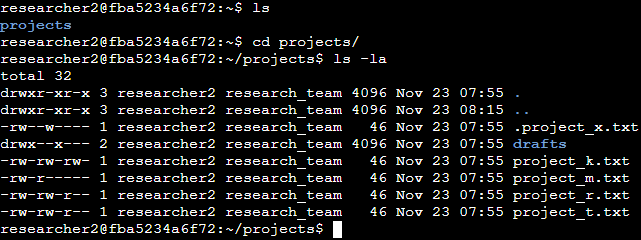

File permissions in Linux
Scenario
Review the scenario below. Then, complete the step-by-step instructions. You are a security professional at a large organization. You mainly work with their research team. Part of your job is to ensure users on this team are authorized with the appropriate permissions. This helps keep the system secure. Your task is to examine existing permissions on the file system. You’ll need to determine if the permissions match the authorization that should be given. If they do not match, you’ll need to modify the permissions to authorize the appropriate users and remove any unauthorized access.
Project description:
In this project ensure that the proper authorization and permissions for user, group and others are set in place. Through Linux commands I examine and modify file permissions strengthening the overall security of the system.
Check file and directory details and describe the permissions string:
In this screenshot I navigated to the projects directory (cd projects/) and checked the files permissions including the hidden files (Command to check permissions: ls –l and a for all)
Current permissions string: -rwxrwxr-x
-rwxrwxr-x for this file indicates that the owner has read, write, and execute permissions, the group has the same, and others have read and execute permissions.
d for directory
- for a regular file
r if the user has read permissions
- if the user lacks read permissions
w if the user has write permissions
- if the user lacks write permissions
x if the user has execute permissions
- if the user lacks execute permissions
First four are for the user permissions, second three are for group permissions and third are for other
Change file permissions:
Take a look at project_k.txt other should not have write permission. Granting write permissions to everyone in a Linux directory is like leaving the front door wide open. It invites anyone to come in and potentially mess things up. Anyone can modify, delete, or add files without control. It's a security risk that opens the door to accidental or intentional damage. Keeping write permissions limited ensures that only authorized users make changes, preventing potential chaos.
Change file permissions on a hidden file:
The research team has archived .project_x.txt, which is why it’s a hidden file. This file should not have write permissions for anyone, but the user and group should be able to read the file.